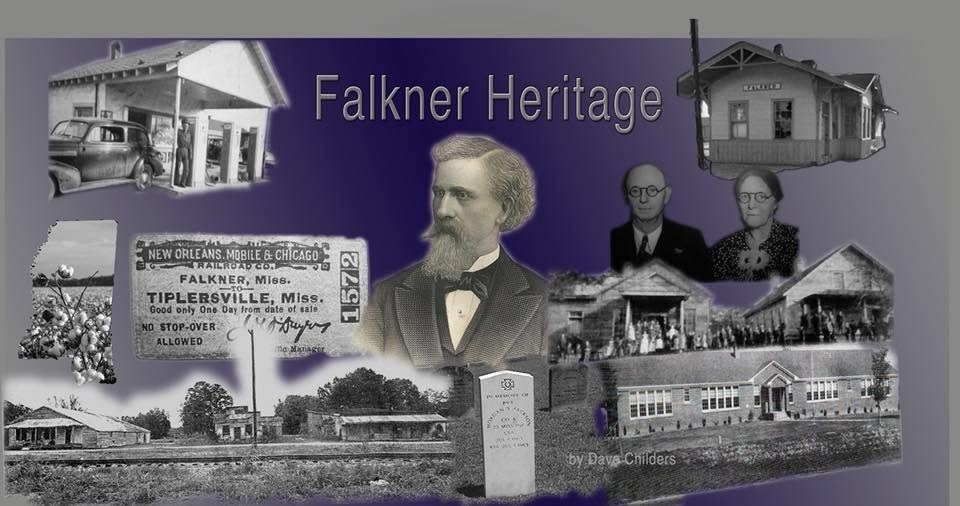
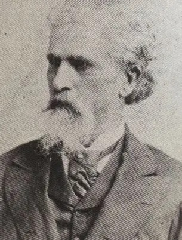

The Colonel’s railroad
In 1870 Colonel William Falkner celebrated the completion of his original Ripley Railroad branch, which ran from New Albany, Mississippi, through Falkner, to Middleton, Tennessee.
“Falkner” is the Colonel’s namesake, and the beginning of the original Town of Falkner, Mississippi. Where the rail line went, a town followed: a depot, a platform, a scattering of stores, and the families who worked and traded around them.
The Colonel was a considerable figure in his own right — and he was also the great-grandfather of the novelist William Faulkner. More about him below.
For a century afterward, the tracks set the rhythm of the place. Freight and passengers came through the Falkner Depot. The Gulf, Mobile & Ohio ran its trains past the platform. Mail was sorted, cotton was shipped, neighbors met the train the way later generations would meet the highway.
Old Town Falkner
The Falkner Heritage Park Grove now sits on the grounds of the Old Town businesses — among them Mrs. Davis’ General Store and Aunt Jalia’s Mercantile — monuments to a place that was once a thriving little railroad village.


The man the town is named for
Colonel William Clark Falkner was a soldier, a lawyer, a railroad builder and — improbably — a best-selling novelist. Falkner, Mississippi carries his name because he brought the railroad through it.
He settled at Ripley, the Tippah County seat a few miles south of here, and made his name in the Civil War commanding the 2nd Mississippi Infantry at First Manassas, and later a regiment of partisan rangers. His men elected him colonel, and the title stayed with him for the rest of his life.
Afterward he turned to the railroad. His narrow-gauge line — the Ship Island, Ripley & Kentucky, known locally as the Ripley Railroad — was completed in 1870 from New Albany through this place to Middleton, Tennessee. Towns appeared along it where there had been farmland, and this one took his name.
He wrote, too. His novel The White Rose of Memphis, published in 1881, went through dozens of printings and sold well across the country.
In November 1889, the day after he won election to the Mississippi state legislature, he was shot in the Ripley town square by Richard Thurmond, his former partner in the railroad. He died the following day. He is buried in Ripley Cemetery beneath a tall marble statue of himself, facing the route his railroad once took.
Great-grandfather of William Faulkner
Colonel William Clark Falkner was the great-grandfather of William Faulkner — the Mississippi novelist who won the Nobel Prize in Literature in 1949.
The family spelled the name Falkner, as this town still does. The novelist added the “u” as a young man, and it is his spelling that the world now knows.
The Colonel did not merely stand behind his great-grandson’s name. He stands inside the books. Colonel John Sartoris — the soldier, railroad builder and duellist who moves through Sartoris and The Unvanquished, dead before most of the stories begin but never quite gone from them — was drawn from him. So was a good deal of the Yoknapatawpha County that Faulkner built out of this corner of north Mississippi.
Which is to say
The railroad that made this town, the man it was named for, and one of the enduring figures of American literature are the same story. It happened here, along the line that ran through Falkner.
Visitors making the drive to Oxford or to Ripley often do not realise that the small town on Highway 15 shares more than a spelling with the novelist. The Museum keeps the local half of that story — the depot, the tickets, the timetables and the families who lived beside the track.
When the trains stopped
The original Falkner Depot stood in the early Town of Falkner until the 1970s, when the railway ceased operation.
The Depot was removed. The old stores were demolished. The Town of Falkner was no longer doing business. What had been a working railroad village for a hundred years became, very quickly, an open field with a memory attached to it.
For four decades the site stayed that way. Then, in 2016, a group of Falkner citizens decided that a town without a record of itself is a town that eventually forgets — and began putting one back together.
A Falkner timeline
-
1856
James H. Cooper buys land in Tippah County
A South Carolina–born schoolmaster and farmer, then in his late seventies, purchases land about two miles northwest of the present town of Falkner. Between 1856 and 1869 he establishes the school that would carry his name.
-
1860
Cooper becomes postmaster at eighty-two
An ambitious man who refused to give up when he had grown old. He died in 1869 and is believed to be buried in Liberty Cemetery.
-
1870
The Ripley Railroad branch is completed
Colonel William Clark Falkner celebrates the completion of his line from New Albany, Mississippi, through Falkner, to Middleton, Tennessee. The town takes the Colonel’s name.
-
1881
The Colonel publishes a best-seller
The White Rose of Memphis goes through dozens of printings. The railroad builder turns out to be a novelist as well — a trait his great-grandson would take considerably further.
-
1889
Colonel Falkner is killed at Ripley
The day after winning election to the Mississippi state legislature, he is shot in the Ripley town square by Richard Thurmond, his former railroad partner. He is buried in Ripley Cemetery beneath a marble statue of himself.
-
1897
William Faulkner is born
The Colonel’s great-grandson, who added the “u” to the family name, would win the Nobel Prize in Literature in 1949 — and would put a version of the Colonel into his novels as Colonel John Sartoris.
-
c. 1910
A new Cooper Hill School House is built
The first boxed-frame building had decayed until its foundation rested on the ground. George McCowan donates an acre of adjoining land, and lumber is bought from Gus McGill’s sawmill in Benton County for the clapboard schoolhouse that still stands today.
-
1970s
The railway ceases operation
The Depot is removed and the old stores are demolished. The Town of Falkner is no longer doing business.
-
2016
Falkner Heritage is founded
A non-profit organization begins, formed by local citizens to preserve Falkner’s history and to encourage improvements to the Old Town. Funding comes entirely from the community: supporters and volunteers, local businesses, banks, schools and churches, project sales and special events.
-
Today
Falkner Heritage Park
The Memorial Garden, the Ayers Family Memorial and Flag Pole, the Veteran’s Monument, Falkner’s State Plaque, the original Cooper Hill School House, a wooded grove of donated benches and streetlights, the Gazebo, public restrooms and a Little Library — and the foundation of a Community Center built to replicate the Depot.
What Falkner Heritage Park holds
The park occupies the original Old Town Falkner property behind the Town Hall, and the grounds of the Old Town businesses across from it.
- The Falkner Heritage Memorial Garden
- The Ayers Family Memorial and Flag Pole
- The Veteran’s Monument
- Falkner’s State Plaque
- The original Cooper Hill School House, restored
- A wooded grove ringed by donated, personalized metal benches and streetlights
- The Gazebo, public restrooms and a Little Library
- The Falkner Heritage Community Center — under construction

Do you remember Old Town Falkner?
Photographs, school records, store ledgers, depot memorabilia, family stories — the museum has been built out of what people brought in. If you have something from Falkner’s past, or a memory worth writing down, we would like to hear it.